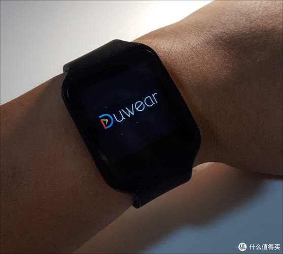

索尼 SmartWatch 3

安卓 Wear 元老，方屏时代的小众遗珠。
客观评测
SmartWatch 3 是早期安卓 Wear 中少数内置 GPS 的机型，跑步无需携带手机即可记录轨迹。1.6 英寸半透反射式方屏在强光下可读性优于同期 AMOLED 产品，且更省电。搭载高通骁龙 400 与 512MB 内存，支持 IP68 防水与可更换表带，Micro USB 充电口直接做在表身侧面。实测日常续航约两天，如今系统更新已终止，功能停留在历史版本。
主观点评
SW3 是安卓 Wear 荒蛮时代的见证者：方方正正的表盘像一块小号数码相框，朴素到有点可爱。当年带着它跑步不用揣手机的新鲜感，如今已成标配。侧面的橡胶塞充电口设计别致，也提醒着那个一切都在试错的年代。作为收藏或怀旧它别有意义，但作为日用设备，它已经把火炬交给了后来者。
优点与不足
- 内置 GPS，脱离手机也能记录跑步
- 半透反射屏阳光下清晰省电
- IP68 防水，日常使用无顾虑
- 续航约两天，需频繁充电
- 方形外观略显工具感
- 系统早已停止更新，应用生态凋零
参数规格
| 屏幕 | 1.6 英寸半透反射式 TFT 方屏 |
|---|---|
| 传感器 | 加速度计、陀螺仪、指南针、环境光传感器 |
| 定位 | 内置 GPS |
| 防水 | IP68 防尘防水 |
| 电池/续航 | 约 2 天 |
| 系统 | Android Wear（可升级至 Wear OS） |
| 兼容性 | Android 4.3 及以上 |
| 处理器 | 高通骁龙 400，512MB RAM + 4GB 存储 |
| 表带 | 硅胶 / 不锈钢可更换表带 |
| 重量 | 约 38 克（含硅胶表带） |